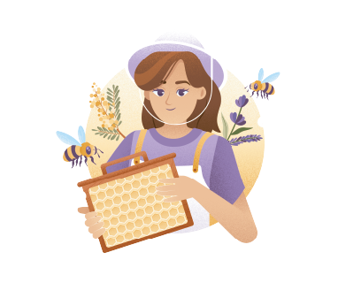
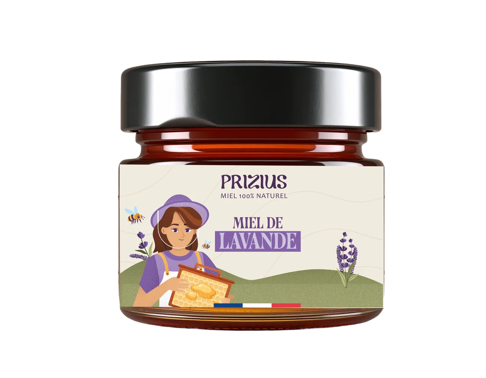
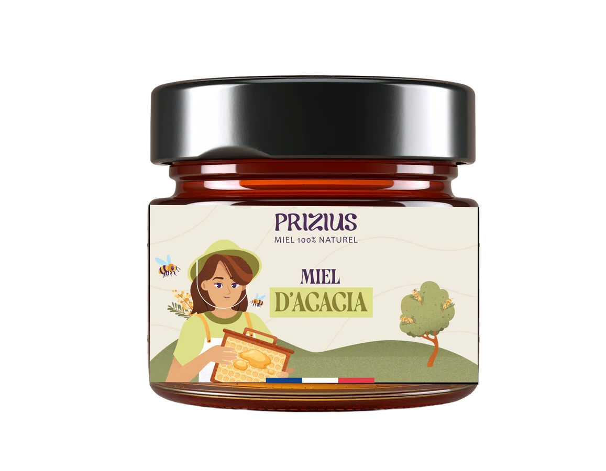
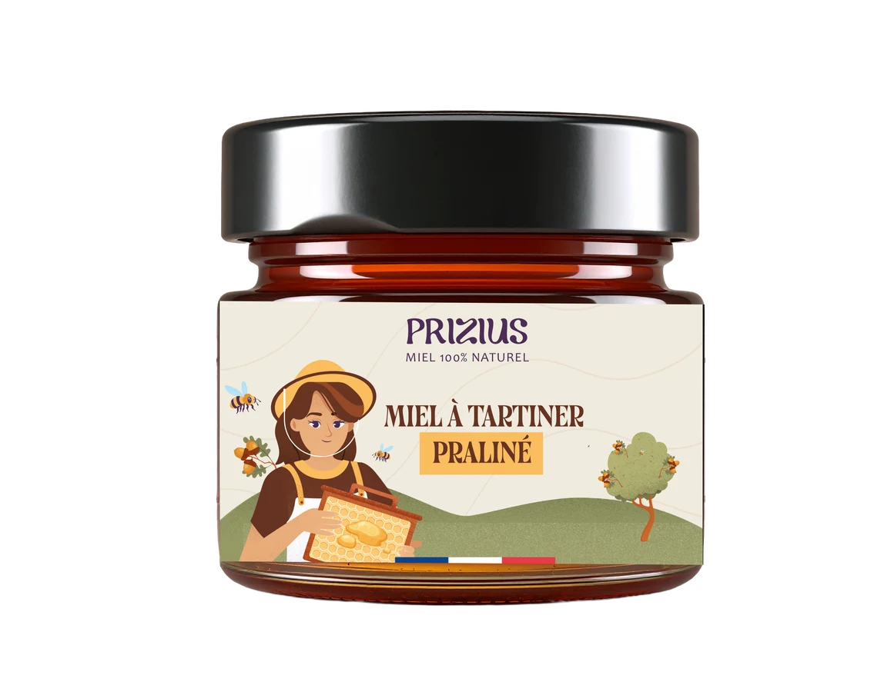

Direction artistique · Branding · Web
Fondée en 2017 en Provence par une apicultrice passionnée, Prizius incarne une nouvelle manière de vivre le miel : plus créative, engagée et sensorielle.

Une identité perçue comme trop digitale et impersonnelle, en décalage avec les valeurs artisanales et humaines de la marque — avec un manque de singularité face à la concurrence.
Revoir l'identité visuelle pour qu'elle traduise mieux les valeurs de Prizius, se différencie des concurrents et affirme un positionnement premium et authentique.
Tracé minimaliste évoquant la fluidité, nuances chaudes du miel et pointe de rose floral.
Teintes pastel, traité fait main et empattements inspirés du cachet de cire.
Lavande de Provence, typographie élégante aux courbes modernes et iconographie d'abeille stylisée.



La vidéo ne s'affiche pas ? Regarder sur YouTube